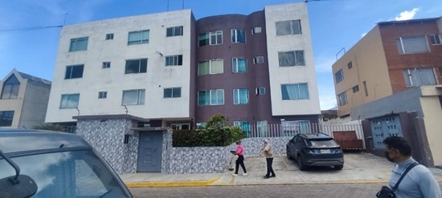
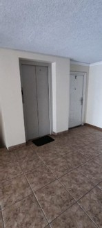
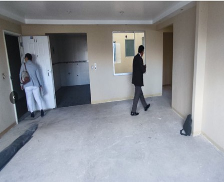
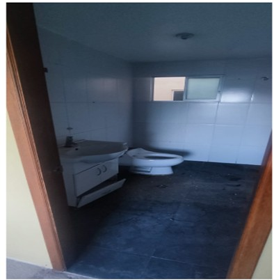
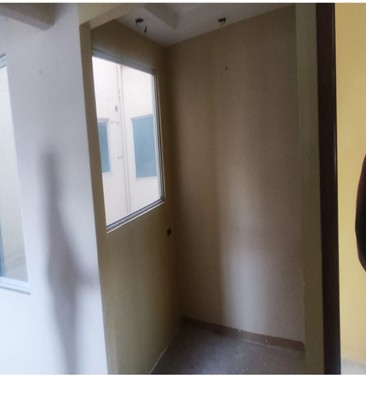
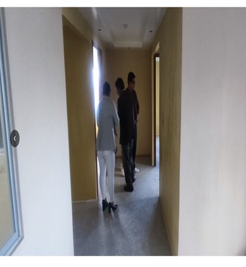
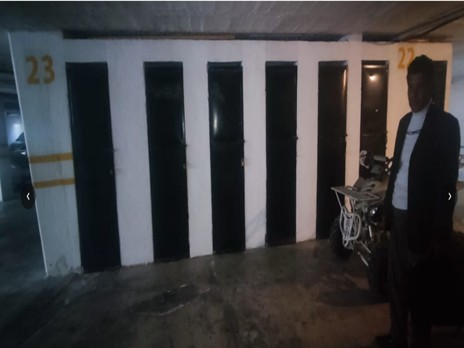
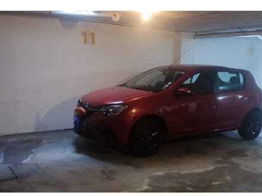

← volver al mapa
Departamento - EC-RJ-155302
EC-RJ-155302 · departamento · QUITO, Pichincha
★ Oferta destacada⚠ gravamen








Datos del remate
| Avalúo pericial | $56,374 |
| Tipo de bien | departamento |
| Área de construcción | 154.54 m² |
| Área de terreno | 154.54 m² |
| Cantón / Provincia | QUITO, Pichincha |
| Dirección / Sector | NTR. MADRE MERCE (SAN ISIDRO DEL INCA). calle de los antuarios (antes calle b) número n53m – e14 – 190 y calle da las anonas. la propiedad forma parte del conjunto habitacional fenicia, siendo el inmueble para avaluar parte del proyecto en propiedad horizontal (departamento 11, estacionamiento 11, 21, bodega 7). conjunto habitacional que se encuentra construido en el lote número 30 de la cooperativa de vivienda nuestra señora de la merced, hoy ntr. madre merced, de la parroquia san isidro del inca (antes llano chico), del canto quito, provincia de pichincha |
| Señalamiento | Primer Señalamiento |
| Fecha de remate | 2026-09-01 |
| No. de proceso | 1731320140861 |
Análisis vs. mercado
| Avalúo por m² | $365/m² |
| Mediana de mercado en la zona | $1,636/m² |
| Descuento vs. mercado | 77.7% |
| Comparables usados | 7 |
| Radio de búsqueda | 2000 m |
| Puntaje | 88/100 |
Descripción completa del avalúo
departamento 11 que tiene un área de construcción de 108.77m2, área que consta en los certificados de gravámenes y enforma individual, así tenemos, los estacionamientos que son dos, elnumero 11 con un area de 21.28m2 área que consta en loscertificados de gravámenes y el numero 21 con 21.28m2 área queconsta en los certificados de gravámenes, así también tenemos unapequeña bodega en planta baja de un área de 3.21m2, área queconsta en los certificados de gravámenes dando un área bruta deconstrucción de 154.54m2. del edificio fenicia.
el inmueble se presenta como primera edificación el departamento 11, se encuentra construida con mampostería de bloque con enlucido, se observa que se encuentra sin mantenimiento, está en el tercer piso del edificio. por otro lado, el edificio para su mejor servicio consta de un ascensor que permite que los propietarios y personal que vive en el lugar se traslade cómodamente y es considerado en nuestro país que este servicio aumenta el valor del inmueble.
calle de los antuarios (antes calle b) número n53m – e14 – 190 y calle da las anonas. la propiedad forma parte del conjunto habitacional fenicia, siendo el inmueble para avaluar parte del proyecto en propiedad horizontal (departamento 11, estacionamiento 11, 21, bodega 7). conjunto habitacional que se encuentra construido en el lote número 30 de la cooperativa de vivienda nuestra señora de la merced, hoy ntr. madre merced, de la parroquia san isidro del inca (antes llano chico), del canto quito, provincia de pichincha
Límites: norte. - en 11.40m con vacío sobre rampa ingreso vehicular; sur. - en 3.20m con pozo de luz, en 6.40m con departamento 12, en 2.60m con área comunal. este. - en 4.40m con departamento 13, en 6.20 con área comunal. oeste. - en 10.00m con vacío sobre área comunal. superior. - en 108.77m2 con departamento 16 a nivel 8.64m. inferior. - en 108.77m2 con departamento 6 a nivel 2.88m.
Clave catastral: 1240909018001003001
Análisis de inversión
⚠ Dudosa — revisar bienBuen descuento (58%), con ascensor en el edificio; tiene un gravamen registrado — revisar antes de ofertar.
A favor:
- Buen descuento
- Edificio con ascensor
En contra:
Análisis elaborado a partir de la descripción del avalúo — no es asesoría legal ni financiera.
Esta ficha es una copia de lo publicado en el sitio oficial de remates
judiciales de la Función Judicial del Ecuador, para consulta — no
reemplaza el expediente judicial. remates.funcionjudicial.gob.ec no da
un link propio por remate, por eso se generó esta página aparte.
Antes de ofertar, el expediente debe revisarlo un abogado.